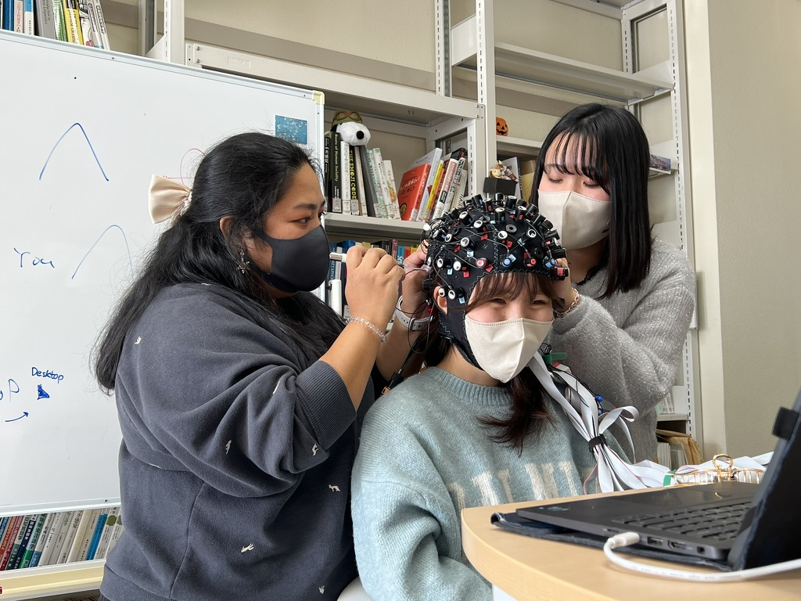
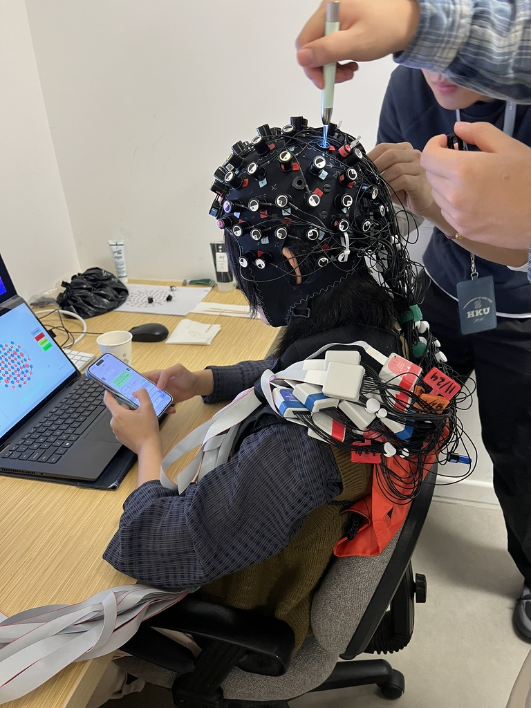
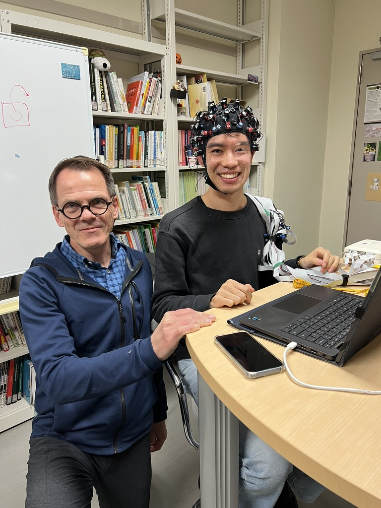
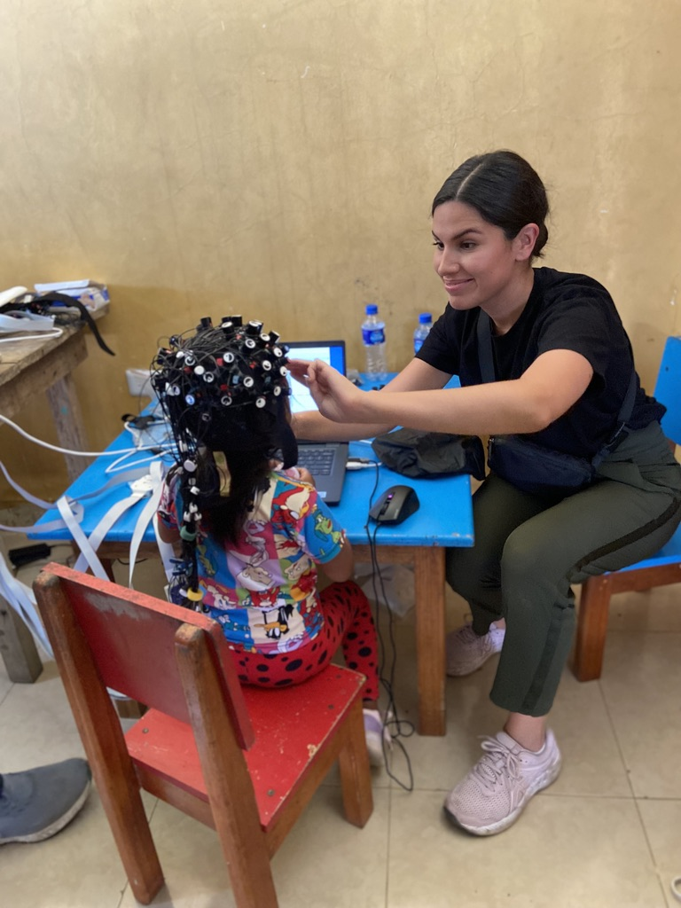

Language learning
is social.
We study how people learn languages with and from each other — in classrooms, across a table, and in the Amazon. We focus on social interactions like classroom language learning, language immersion, story telling, and even novel reading. Using portable brain imaging, we watch what happens between people, not just inside one head.
The lab is a place to learn as much as a place to do research. Students from linguistics, psychology, neuroscience, communication disorders, computer science, ad other majors work side by side, and most arrive never having touched a brain-imaging cap. Few have had lab or brain imaging experience previously.

What a week in the lab looks like
Fit a cap
Learn to place optodes, check signal quality, and make a participant comfortable. It takes a few sessions to get fast at it.
Run a session
Pair up with an experienced member to run a recording during a conversation task, a storytelling event, or a classroom lesson.
Look at the data
Open a recording in lab software or Python or MATLAB and see hemodynamic signals for the first time. We'll show you what you're looking at and how to clean and analyze fNIRS data.
Read and talk
Weekly lab meeting: we often discuss one paper, one dataset, one problem somebody in the lab is stuck on. Everyone talks. We brainstorm, learn and problem solve together.
Present it
Students co-author posters and papers and present at conferences — Boston, Birmingham, Lyon, New Orleans in recent years.
Social interaction and language learning
How learning with another person changes what the brain does with a new language, and whether social connectedness in a classroom leads to better learning.
Hyperscanning and neural coupling
Simultaneous imaging of multiple people, usually to determine how connected they are with each other. In our lab, this often involves imaging speakers and listeners — up to five people at once — in authentic settings such as live public storytelling, to study how brains synchronize and what that can tell us about things like social connectivity and belonging.
Emotion, stress, and assessment
Emotion-word processing in bilinguals, pre-exam relaxation and its effect on neural activation and test performance, and cognitive load during oral proficiency interviews are all examples of how we approach the psychology of language learning and processing using fNIRS and other techniques.
Ideophones and multisensory meaning
Neural evidence for how sound-symbolic words carry sensory meaning in Japanese, Chinese, and Pastaza Kichwa — including the first fNIRS data collected in the Ecuadorian Amazon. The multisensorial nature of ideophones means they engage a broad network of brain regions associated with visual, motor, affective, and other sensory and experiential forms of processing.
No neuroscience background required
Most of our members have joined without ever having touched fNIRS equipment. What matters is curiosity and showing up. Here's what students from some different fields tend to end up doing:
Ready to come by?
The first step is an email. Tell us what you're studying and what interests you. We'll invite you to a lab meeting so you can see how it works before committing to anything.
Email Dan DeweyOr read what joining involves first.
We use five NIRx NIRSport2 systems, which can be used one at a time, together for full head brain imaging, or synchronized to record up to five people at once. Members reserve a full recording kit — NIRSport2 unit,, source and detector bundles, headband, cap, and laptop — through the lab's own scheduler, which also shows the calendar and each item's history. Our full equipment list is below.
Hardware and software by NIRx Medical Technologies. Analysis in MATLAB, Python, and R.

More from the lab
Equipment scheduler
Reserve units, caps, and laptops; see the calendar; check any item's history. Current lab members only, please! Others cannot check out our equipment.
Publications & presentations
Papers, preprints, posters, and recorded talks from the lab's neuroimaging work.
People
See our faculty, students, collaborators, and alumni.
For researchers
Learn about our equipment, methods, analyses, and an invitation to collaborate
Code & pipelines
Session tooling and analysis code (soon to come)
Society for fNIRS
The method's international community.
Participate in a study
What a session involves and how to sign up.
Story Slam project
The five-person hyperscanning study of live storytelling and social belonging.


